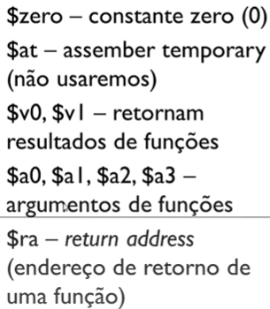

Assembly¶
Note
Esta página cobre o assembly MIPS, que é o dialeto usado em maior detalhe nas anotações originais (por ser didaticamente mais simples e muito usado em disciplinas de arquitetura de computadores), além de uma nota breve sobre NASM e GAS, os dois dialetos de assembly x86 mais comuns.
MIPS¶
MIPS é uma arquitetura RISC (Reduced Instruction Set Computer), caracterizada por um conjunto de instruções pequeno e regular, em que cada instrução é simples e, em geral, executa em um único ciclo de clock.
Instruções¶
As instruções em MIPS aceitam, no máximo, até 3 operandos (registradores) — por exemplo, uma instrução de soma recebe dois registradores de origem e um registrador de destino.
Registradores¶
O MIPS possui 32 registradores de 32 bits cada, e cada registrador é referenciado com o símbolo $ antecedendo o seu nome (por exemplo, $s0, $t1, $a0).
| Registrador(es) | Função |
|---|---|
$zero |
constante zero (0) |
$at |
assembler temporary (não usaremos) |
$v0, $v1 |
retornam resultados de funções |
$a0, $a1, $a2, $a3 |
argumentos de funções |
$ra |
return address (endereço de retorno de uma função) |
$t1 a $t9 |
registradores temporários, que podem ser modificados por funções |
$s1 a $s8 |
similares aos $t1 a $t9, mas salvam valores |
$k0 e $k1 |
registradores do kernel |
$gp |
registrador de valores globais |
$sp |
stack pointer (aponta pro início da stack e muda progressivamente) |
$fp |
frame pointer (aponta pro início da pilha e não muda até que a função seja executada) |
Imagens de referência (slides)



Instruções de movimentação de dados¶
Load (lw) — instrução de movimentação de dados da memória para o registrador; é uma operação de leitura da memória, usada para o tipo .word. Sintaxe: lw $s0, myArray($zero) coloca o conteúdo da primeira posição de myArray no registrador $s0.
Imagem de referência (slide)

Store (sw) — instrução de movimentação de dados do registrador para a memória; é uma operação de escrita na memória. Sintaxe: sw $s0, myArray($zero) coloca o conteúdo do registrador $s0 na primeira posição de myArray.
Imagem de referência (slide)

Move (move) — instrução para passar o conteúdo de um registrador para outro registrador; a memória RAM não é envolvida nessa operação.
li — atribui um número imediato (literal) a um registrador. É usada, em particular, em conjunto com syscall para definir qual operação de I/O realizar, conforme o valor colocado em $v0:
| Comando | Significado |
|---|---|
li $v0, 1 |
imprimir inteiro |
li $v0, 2 |
imprimir float |
li $v0, 3 |
imprimir double |
li $v0, 4 |
imprimir string ou char |
li $v0, 5 |
ler inteiro |
li $v0, 6 |
ler float |
li $v0, 7 |
ler double |
li $v0, 8 |
ler string ou char |
li $v0, 10 |
encerrar programa principal |
Leitura de inteiros: executa-se li $v0, 5 e, ao dar syscall, o valor lido fica armazenado em $v0 (geralmente copiado para um registrador temporário com move).
Leitura de strings: declara-se a string e seu tamanho em .data (usando .space para o número de bytes); em .text, executa-se li $v0, 8, la $a0, <variavelRam> e la $a1, <numeroBytesLidos>; ao dar syscall, o valor lido fica armazenado em $a0.
Imagens de referência (slides)


Para armazenar valores do tipo float e double, usamos os registradores $fX. Números de ponto flutuante: float usa 32 bits (um único registrador do coprocessador 1); double usa 64 bits (dois registradores do coprocessador 1). É importante observar que os valores do tipo double devem ser armazenados nos registradores de índice par (já que um double ocupa 64 bits, o equivalente a dois registradores de ponto flutuante consecutivos: $f0–$f31).
Imagens de referência (slides)


la — copia o endereço de um label (rótulo) na memória para o registrador dado; é usado para os tipos .byte ou .asciiz.
Instruções aritméticas¶
| Instrução | Significado |
|---|---|
add |
Soma — usa dois registradores como operandos. |
addi |
Soma — usa um registrador e um valor inteiro imediato. |
sub |
Subtração. |
subi |
Subtração — usa um registrador e um valor inteiro imediato. |
mul |
Multiplicação. |
div |
Divisão inteira. |
div
Imagem de referência

Após uma operação de div, o quociente é armazenado no registrador especial lo, e o resto no registrador especial hi:
-
mflo— move o conteúdo do registradorlo(o quociente da divisão) para um registrador comum. Ex.:mflo $s0move o conteúdo delopara$s0.Imagem de referência

-
mfhi— move o conteúdo do registradorhi(o resto da divisão) para um registrador comum. Ex.:mfhi $s1move o conteúdo dehipara$s1.Imagem de referência

Deslocamento de bits (shifts)¶
sll (shift left logical) — desloca os bits para a esquerda, o que equivale a multiplicar por potências de dois. Multiplicar números por potências de 2 é trivial para o computador, bastando realizar a operação de shift left (mover os bits para a esquerda): mover os bits de um número binário uma casa para a esquerda multiplica por \(2\); duas casas, por \(4\); e, de forma geral, mover \(n\) casas para a esquerda multiplica por \(2^n\).
Imagem de referência

Por exemplo, se fizermos sll $s3, $s2 (= 10), 10, estaremos multiplicando \(10\) por \(2^{10} = 1024\), resultando em \(10240\).
srl (shift right logical) — desloca os bits para a direita, o que equivale a dividir por potências de dois (capturando apenas a parte inteira do resultado). Por exemplo, srl $s0, $s4 (= 10240), 5 equivale a \(10240 / 2^5 = 320\).
Diretivas e estrutura de um programa¶
.data— seção de especificação de variáveis; lida com os dados que residem na memória principal. Para criar uma variável do tipo string, usamos a diretiva.asciiz(que adiciona um terminador nulo); se for apenas um caractere, usamos.ascii..text— seção que contém as instruções propriamente ditas do programa.- Impressão de saída — a sequência típica é carregar o código da operação desejada em
$v0e o valor a imprimir em$a0, seguido da instruçãosyscall, que executa a chamada de sistema (imprimindo o que está dentro do registrador$a0, no caso de uma impressão de inteiro).
Condicionais¶
As condicionais em Assembly MIPS são montadas combinando as instruções de desvio condicional com rótulos (labels):
| Comando | Significado | Pronúncia |
|---|---|---|
beq $t1, $t2, label |
Se $t1 for igual a $t2, execute a partir do rótulo label |
branch if equal |
bne $t1, $t2, label |
Se $t1 for diferente de $t2, execute a partir do rótulo label |
branch if not equal |
blt $t1, $t2, label |
Se $t1 for menor que $t2, execute a partir do rótulo label |
branch if less than |
bgt $t1, $t2, label |
Se $t1 for maior que $t2, execute a partir do rótulo label |
branch if greater than |
ble $t1, $t2, label |
Se $t1 for menor ou igual a $t2, execute a partir do rótulo label |
branch if less or equal |
bge $t1, $t2, label |
Se $t1 for maior ou igual a $t2, execute a partir do rótulo label |
branch if greater or equal |
Imagem de referência

Warning
Em MIPS não existe uma instrução de else: a linguagem oferece apenas instruções de desvio condicional (beq, bne, blt, bgt, etc.), e toda estrutura condicional — incluindo um if/else — precisa ser construída manualmente a partir de desvios (branches) e rótulos (labels).
Laços de repetição¶
Os laços de repetição em Assembly são combinações de ifs e jumps. Para implementar um loop, são necessários pelo menos dois rótulos: um para manter o fluxo dentro do loop, e outro para sair dele. Ex.:
while:
#aqui vão os comandos que serão executados no loop
saida:
#aqui vão os comandos depois que o loop terminar
Imagem de referência

Da mesma forma que os condicionais, os laços de repetição (for, while) são implementados combinando rótulos com instruções de desvio condicional e incondicional (j), que saltam de volta para o início do laço ou para fora dele, conforme a condição de parada é avaliada.
Funções¶
É uma boa prática colocar o rótulo (label) main na função principal:
.data
#aqui especifico as variáveis que vão pra RAM
.text
.main:
#aqui eu implemento o meu código principal
#o main é uma função implícita de todo programa
Imagem de referência

jal(jump and link) — usada para chamar a função: salta para o endereço da função e salva o endereço de retorno em$ra.jr(jump register) — usada para retornar a quem chamou a função.jr $ravolta para quem chamou a função.$ra— registrador específico que armazena o endereço de retorno de funções (é automaticamente preenchido porjal, e usado porjr $rapara voltar).
Imagem de referência

Funções — parâmetros e retorno. Devemos usar os registradores adequados:
$a0a$a3— argumentos de funções, ou seja, valores que passamos como parâmetros a qualquer função do programa.$v0e$v1— return de funções, ou seja, valores que retornamos.
Imagem de referência

Exemplo — a função C abaixo:
equivale, em Assembly MIPS, a:
example: # Label
add $t0, $a0, $a1 # Soma a + b
add $t1, $a2, $a3 # Soma c + d
sub $v0, $t0, $t1 # Subtrai e coloca o resultado no registrador de retorno
jr $ra # Retorna o controle para a função principal
Imagem de referência

Arrays (vetores)¶
Vetores em MIPS são tratados como blocos contíguos de memória, acessados por meio de um registrador que guarda o endereço base do vetor, somado a um deslocamento (offset) calculado a partir do índice e do tamanho de cada elemento (por exemplo, 4 bytes por elemento, no caso de inteiros do tipo .word). Um array é, portanto, um conjunto de elementos de mesmo tipo, armazenados em espaços contíguos da memória RAM (endereços consecutivos).
Imagem de referência

Deve-se alocar o espaço do array previamente, já que esse espaço nunca será alterado ao longo do programa. Tamanhos de cada tipo em Assembly MIPS:
| Tipo | Tamanho |
|---|---|
| Word | 32 bits (4B) |
| Byte | 8 bits (1B) |
| Integer | 32 bits (4B) |
| Character | 4 bits (0,5B) |
Ex.: para criar um array de 100 inteiros, é preciso alocar 400B de memória RAM, pois cada inteiro ocupa 4B.
Imagem de referência

A alocação ocorre na seção .data:
Com isso, se myArray aponta para o endereço 1024, os elementos ficam em myArray(0) (endereço 1024), myArray(4) (endereço 1025), myArray(8) (endereço 1026) e myArray(12) (endereço 1027) — ou seja, o offset entre colchetes é sempre em bytes, não em índice do elemento.
Imagem de referência

Para acessar os elementos, usam-se as instruções lw (load word) — que lê um conteúdo da RAM e o coloca em um registrador da CPU — e sw (store word) — que escreve o conteúdo de um registrador da CPU na RAM.
Imagem de referência

Manipulação de arquivos de texto¶
Para manipular arquivos, é necessário abri-los no modo em que serão usados (leitura ou escrita). Roteiro:
- Abrir no modo leitura → Ler → Fechar
- Abrir no modo escrita → Escrever → Fechar
Abrir um arquivo
Imagem de referência

Warning
Em MIPS, não existe um modo de abertura que permita leitura e escrita simultâneas no mesmo arquivo — é necessário escolher um ou outro modo ao abrir.
Ler um arquivo
Passos necessários: (1) abrir no modo leitura, (2) informar o nome do arquivo (e diretório em que se encontra), (3) salvar o descritor do arquivo; (4) ler usando o descritor, (5) informar o nome do buffer que vai salvar o conteúdo, (6) informar o tamanho do buffer; e, por fim, (7) fechar o arquivo.
Imagens de referência


Nessa sequência: li $v0, 13 indica o modo de abertura de arquivo; la $a0, file precisa passar, em $a0, o endereço do nome do arquivo; e li $a1, 0 é a flag do modo de abertura (0 para leitura, 1 para escrita):
Imagem de referência

Em seguida, li $v0, 14 indica que a operação será de leitura do arquivo; e, diferentemente do que se poderia esperar, o tamanho do buffer é passado com li $a2, tamanhoBuffer (carregando o valor imediato), e não com la $a2, tamanhoBuffer (que carregaria um endereço):
li $v0, 14
#o descritor deve estar em $a0 neste ponto
la $a1, conteudoDoArquivo #string com o conteúdo
la $a2, tamanhoBuffer
syscall
Imagem de referência

Por fim, para fechar o arquivo lido, usa-se o código 16 em $v0, com o descritor obrigatoriamente em $a0:
Escrever em um arquivo
Passos necessários: (1) abrir no modo escrita, (2) informar o nome do arquivo (e diretório em que se encontra), (3) salvar o descritor do arquivo; (4) escrever usando o descritor, (5) informar a string com o conteúdo, (6) informar o tamanho da string; e, por fim, (7) fechar o arquivo.
Imagem de referência

Para abrir o arquivo no modo escrita, o procedimento é o mesmo do modo leitura, exceto pela flag passada em $a1, que passa a ser 1 (escrita) em vez de 0 (leitura):
Imagem de referência

Para escrever no arquivo, usa-se o código 15 em $v0, informando a string com o conteúdo e o número de caracteres a serem escritos:
li $v0, 15
#o descritor deve estar em $a0 neste ponto
la $a1, conteudoDoArquivo #string a ser escrita
la $a2, tamanhoString #nro de caracteres da string a ser escrita
syscall
Imagem de referência

Por fim, fecha-se o arquivo escrito da mesma forma que no modo leitura, com o código 16 em $v0 e o descritor em $a0:
Imagem de referência

NASM e GAS¶
O material original apenas listava esses dois nomes, sem detalhá-los; a seguir, um resumo mínimo de propósito geral sobre cada um, para contextualizar sua diferença em relação ao MIPS visto acima:
- NASM (Netwide Assembler) — é um dos montadores (assemblers) mais populares para a arquitetura x86/x86-64, utilizando a sintaxe Intel, em que o destino da operação vem antes da origem (por exemplo,
mov eax, ebxmove o conteúdo deebxparaeax). É amplamente usado em projetos de sistemas operacionais, bootloaders e código de baixo nível que roda diretamente sobre hardware x86, justamente por gerar binários simples e por sua sintaxe ser considerada mais legível por muitos programadores. - GAS (GNU Assembler) — é o montador padrão do projeto GNU (parte do binutils, usado por padrão pelo GCC), e tradicionalmente utiliza a sintaxe AT&T, em que a ordem dos operandos é invertida em relação à sintaxe Intel (o destino vem depois da origem — por exemplo,
movl %ebx, %eaxmove o conteúdo deebxparaeax), além de usar prefixos como%para registradores e$para valores imediatos. É o montador mais comumente encontrado "por debaixo dos panos" em sistemas Linux, já que é o utilizado pelo GCC para gerar código objeto a partir de código assembly embutido (inline assembly) ou gerado pelo compilador.
Em ambos os casos, o princípio fundamental é o mesmo observado no MIPS: um pequeno conjunto de instruções que manipulam registradores e memória diretamente, sem as abstrações (variáveis nomeadas, tipos, estruturas de controle de alto nível) presentes em linguagens como C — a diferença está na arquitetura de hardware-alvo (x86/x86-64, ao invés de MIPS) e na sintaxe de escrita das instruções.